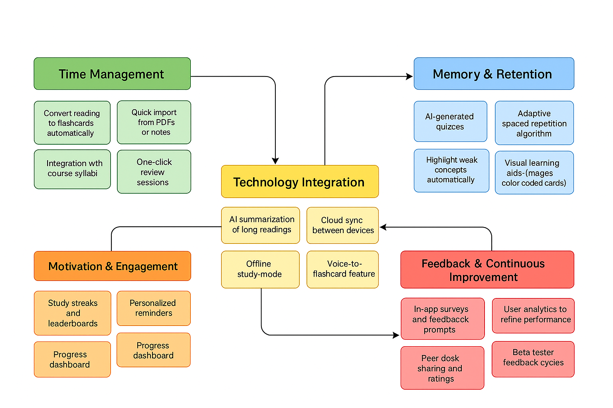

Problem Statement

Busy college students balancing classes, labs, and work need a fast way to turn long readings into spaced-practice flashcards because cramming wastes time and doesn’t stick.
My mission is to become a pioneer in computational neuroscience.
Busy college students balancing classes, labs, and work need a fast way to turn long readings into spaced-practice flashcards because cramming wastes time and doesn’t stick.
The affinity diagram organizes key ideas from the problem statement into categories, helping visualize challenges and possible solutions for improving student study efficiency.
